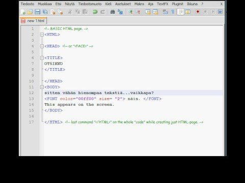
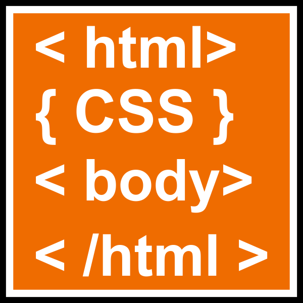
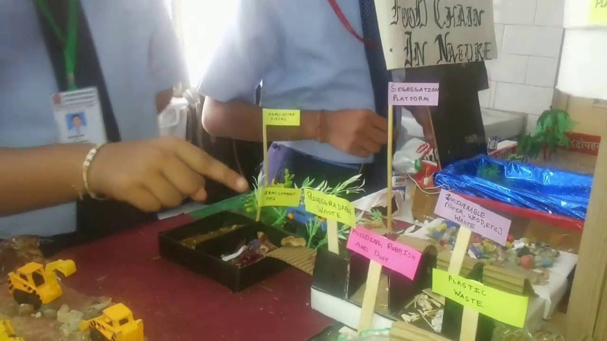

(At School Time)

This Html Project
is totally related to the basic coding of Html as
it was just for the school students and it was the individual project of students.

In this project, Our Professor told us to do the simple coding and make
a website you would like and link that to the extenal stylesheet.
It also exhibits the
code of developers’ clever ideas, so others can make
a few tweaks or find workarounds for their own troubles. All this, plus
a stylish design,
is making Codepen a new go-to spot for both inspiration and entertainment.
This Project was Fully Related to How can we dump the Garbage and Litter and we have to make to working model related to that and It was the Group Project.
Basically, the main idea of the Project is to Save the Environment in different forms and to gain the vast Knowledge about the Environment and It was very Jovial to do that Project as I have Learnt many things related to our Surroundings and how to keep ourselves Safe in this Modern World of Global Warming.
In this Project, I developed a Website regarding the merging of different types wordings including their pictures starting with that page as same as our professor has done but same as possible and adding some of the extensions and enhancements that makes the site more enhanced.
In this Project, I have used different type of Coding, Got ideas from my friends as It was an Individual Project.
*And Especially we have to make it on a Textpad which was the Biggest Challenge.